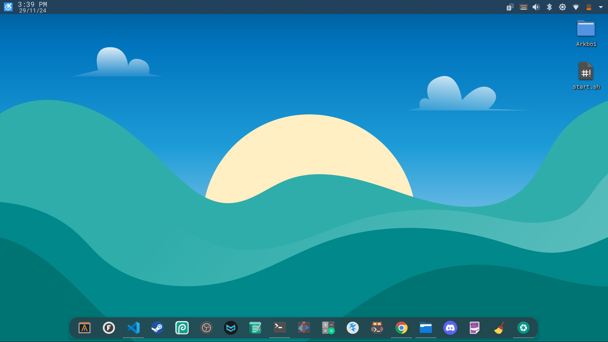

ArkboiTech - All about Linux tech
Home: the terrible yet amazing Linux
# Kubuntu: Better than Ubuntu?
Kubuntu is the (linux) distrubution that i personally use, and i think it's way better than Ubuntu, because of a whole lot of things:
> Kubuntu has the (KDE) Plasma Desktop Environment, which is highly customizable
> It's super fast
> Everything is user friendly because of:
> (APT) package manager
> (Ubuntu) Flavor
> (KDE) Plasma
> It's (K)ubuntu
And after all you can make it look like whatever you want to, and it's just so good
# Problems with Kubuntu
Personal:
I (recently) had problems with Wi-Fi where it would be 0b/s after a while, and i'm trying to fix it,
maybe the problem is:
>Network drivers
>Updates
>(or) Something else
I will put an image of my Kubuntu Desktop below this (hopefully)

More Updates coming sooon!
Coming Up: The world of (FOSS)* apps in (Linux)
*Free And Open Source